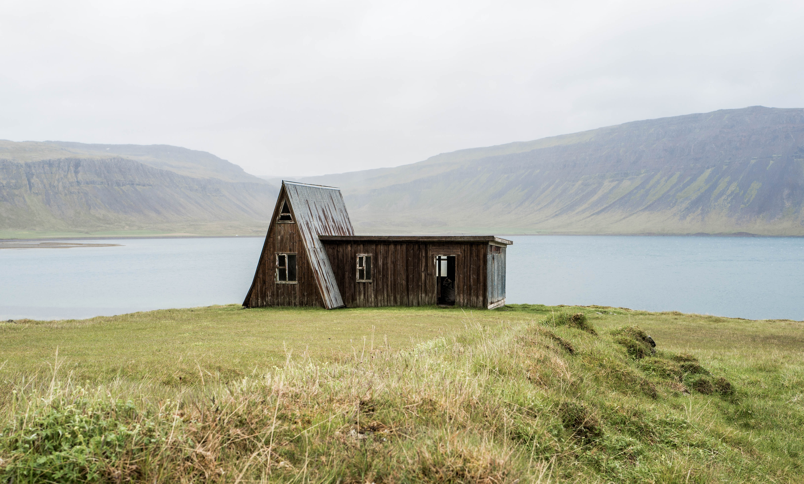

SECTION 1: Create 4 sections on your page that have different background colors and are 800px in height. If you’re stumped on colors you can use, pick 4 from https://flatuicolors.com/. They should have the following content: Section 1 and Section 3 should have a picture on the left and a paragraph on the.

SECTION 3: Create 4 sections on your page that have different background colors and are 800px in height. If you’re stumped on colors you can use, pick 4 from https://flatuicolors.com/. They should have the following content: Section 1 and Section 3 should have a picture on the left and a paragraph on the right.
It always seems impossible, until it's done. —Nelson Mandela